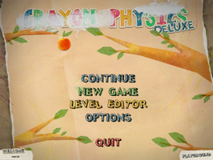
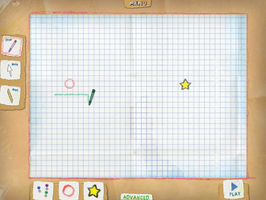
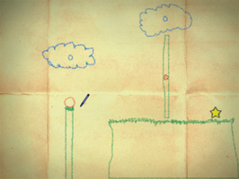

Crayon Physics Deluxe
Dieser Artikel wurde für die folgenden Ubuntu-Versionen getestet:
Ubuntu 14.04 Trusty Tahr
Zum Verständnis dieses Artikels sind folgende Seiten hilfreich:
Crayon Physics Deluxe  ist ein Denkspiel, welches die physikalischen Eigenschaften der Schwerkraft befolgt. Mit einem Buntstift bewaffnet gilt es den Ball in den mehr als 70 Leveln zum Stern zu bugsieren. Alles was man benötigt zeichnet man auf die 2-dimensionale Spieleoberfläche. Ein Level-Editor ermöglicht die Gestaltung eigener Level.
ist ein Denkspiel, welches die physikalischen Eigenschaften der Schwerkraft befolgt. Mit einem Buntstift bewaffnet gilt es den Ball in den mehr als 70 Leveln zum Stern zu bugsieren. Alles was man benötigt zeichnet man auf die 2-dimensionale Spieleoberfläche. Ein Level-Editor ermöglicht die Gestaltung eigener Level.
|  |  |  |
| Menü | Leveleditor | Spielszene |
Installation¶
Desura¶
Das Spiel kann über die Internetseite oder den Client zur Spieleliste hinzugefügt und gestartet werden [6].
Humble Indie Bundle #3¶
Zuerst entpackt [1] man das Paket crayon_release55_2.tar.gz aus dem Humble Indie Bundle z.B. nach ~/Spiele/CrayonPhysicsDeluxe. Bevor das Spiel gestartet wird, sollte man sichergehen, ob folgende Pakete schon installiert sind und bei Bedarf über die Paketverwaltung nachinstallieren [9]:
libsmpeg0 (universe)
libmikmod2 (universe)
libqtgui4
 mit apturl
mit apturl
Paketliste zum Kopieren:
sudo apt-get install libsmpeg0 libmikmod2 libqtgui4
sudo aptitude install libsmpeg0 libmikmod2 libqtgui4
Anschließend wechselt man in das vorherige Verzeichnis und kann das Programm über 'launcher' starten [2]. Durch eine Registrierung beim Hersteller können neue Level automatisch heruntergeladen werden.
Auf Wunsch einen Menüeintrag [3] vornehmen. Hierfür sind ein paar Vorarbeiten notwendig:
Menüeintrag¶
Mit einem Editor [4] im Homeverzeichnis unter /bin die Datei crayonphysicsdx mit dem folgenden Inhalt anlegen:
1 2 3 | #/bin/sh cd ~/Spiele/CrayonPhysicsDeluxe exec ./launcher "$@" |
Anschließend die Datei ausführbar [5] machen. Das Icon für den Menüeintrag [3] findet man im Spieleverzeichnis unter data/gfx/big_star.png.
Steuerung¶
Hinweis:
Sollte man einen Tablet-PC verwenden, kann es u.U. vorkommen, dass beim Auflegen des Eingabestiftes der angezeigte Stift verschwindet. Dieser befindet sich an einer Stelle außerhalb des sichtbaren Bereiches. Um dies zu umgehen, reicht es das Spiel im Fenstermodus auszuführen.
Mit dem Buntstift  zeichnet man die Objekte. Mit einem Rechtsklick
zeichnet man die Objekte. Mit einem Rechtsklick  entfernt man diese wieder.
entfernt man diese wieder.
Optionen¶
Unter "Options" kann die Auflösung sowie der Vollbild- / Fenstermodus (de)aktiviert werden. Die Soundeinstellungen und die Sprache kann hier ebenfalls geändert werden. Nutzer eines Tablet-PC können hier erweiterte Einstellungen vornehmen.
Leveleditor¶
Der Leveleditor ist über das Hauptmenü unter "Level Editor" zu finden. Eigene Kreationen können über "Menu -> Save Level" gespeichert oder über "Menu -> Upload Level" publiziert werden.
Eine Anleitung ist unter How to use the level editor zu finden.
Zusatzlevel¶
Zusatzlevel können von crayonphysics.com  heruntergeladen werden. Die .png-Datei kann entweder über den Leveleditor oder via Drag&Drop im
Alt +
⏎ Fenstermodus gestartet werden.
heruntergeladen werden. Die .png-Datei kann entweder über den Leveleditor oder via Drag&Drop im
Alt +
⏎ Fenstermodus gestartet werden.
Problemlösungen¶
Speicherzugriffsfehler¶
Unter Ubuntu 12.04 Precise kann es sein, dass Crayon Physics nicht mehr startet. Beim Start über das Terminal [7] erscheint folgende wenig aussagekräftige Fehlermeldung:
MaxMustermann@Ubuntu-Desktop:~$/opt/CrayonPhysicsDeluxe/launchcrayon.sh /opt/CrayonPhysicsDeluxe/launchcrayon.sh: Zeile 4: 9446 Speicherzugriffsfehler (Speicherabzug geschrieben) ./launcher
Dabei scheint ein Fehler im Zusammenspiel zwischen alsa-oss und PulseAudio der Verursacher zu sein. Folgender Befehl [8] lässt Crayon Physics wieder starten:
padsp /opt/CrayonPhysicsDeluxe/launchcrayon.sh
Der Eintrag im Anwendungsmenü muss jetzt natürlich auch noch entsprechend angepasst werden, damit das Spiel nicht immer über das Terminal gestartet werden muss.
libdbusmenu¶
Mit Ubuntu 12.04 64-Bit kann das Spiel auch wegen folgendem Fehler nicht mehr starten:
/usr/lib/gtk-2.0/2.10.0/menu[:Programme starten: Ein Programm ohne Menüeintrag starten]proxies/libappmenu.so: falsche ELF-Klasse: ELFCLASS64
Dazu gibt es einen Bug Report auf launchpad: Bug #859512 , der den Fehler beschreibt, daß das Paket libdbusmenu nicht "multiarch" fähig ist. Als workaround kann man folgende Pakete installieren [9]:
libglew1.5:i386
ia32-libs (universe)
libsdl1.2debian
libsdl-image1.2 (universe )
libsdl-mixer1.2 (universe )
libqtcore4
libqtgui4
mit apturl
Paketliste zum Kopieren:
sudo apt-get install libglew1.5:i386 ia32-libs libsdl1.2debian libsdl-image1.2 libsdl-mixer1.2 libqtcore4 libqtgui4
sudo aptitude install libglew1.5:i386 ia32-libs libsdl1.2debian libsdl-image1.2 libsdl-mixer1.2 libqtcore4 libqtgui4
und das Verzeichnis /opt/CrayonPhysicsDeluxe/lib32 umbenennen [7] [10]:
sudo mv /opt/CrayonPhysicsDeluxe/lib32 /opt/CrayonPhysicsDeluxe/lib32_original
Dann startet das Spiel wieder.
libGLEW¶
Ein weiteres Problem (z.B. beim Start mit Ubuntu 12.10) kann folgende Fehlermeldung sein, wenn man das lib32 Verzeichnis umbenannt hat (wieder wie oben in einer shell gestartet):
error while loading shared libraries: libGLEW.so.1.5: cannot open shared object file: No such file or directory
Dann kann man wieder ein /opt/CrayonPhysicsDeluxe/lib32 Verzeichnis anlegen und die libGLEW.so.1.5 Datei verlinken:
sudo ln -s /opt/CrayonPhysicsDeluxe/lib32_ORIGINAL/libGLEW.so.1.5 /opt/CrayonPhysicsDeluxe/lib32/libGLEW.so.1.5
Tastenkürzel¶
| Tastenkürzel | |
| Taste(n) | Funktion |
| Alt + ⏎ | Vollbild-/Fenstermodus |
| Esc | Menü |
| Level neu starten. | |
| Alt + F4 | Spiel beenden |

Infobox¶
| Crayon Physics Deluxe | |
| Originaltitel: | Crayon Physics Deluxe |
| Genre: | Puzzle |
| Sprache: |   |
| Veröffentlichung: | 2009 |
| Publisher: | Kloonigames |
| Systemvoraussetzungen: | - |
| Medien: | Download |
| Strichcode / EAN / GTIN: | - |
| Läuft mit: | nativ |
- Erstellt mit Inyoka
-
 2004 – 2017 ubuntuusers.de • Einige Rechte vorbehalten
2004 – 2017 ubuntuusers.de • Einige Rechte vorbehalten
Lizenz • Kontakt • Datenschutz • Impressum • Serverstatus -
Serverhousing gespendet von